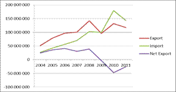
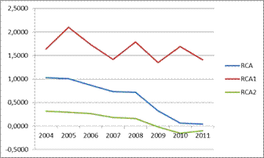

Paper Title :
Evaluation Of The Efficiency Of Cheese Trade In Slovakia
Abstract
The main purpose of this paper is to evaluate the efficiency of cheese trade in Slovak republic. In order to achieve the objective were used indices: RCA, RCA1, RCA2, TT and net export. The result confirms deteriorating situation in the trade with cheese.
Authors
Jarmila Hudáková
Slovak agricultural university
Nitra, Slovak republic
Paper Transcript of Paper Titled :
Evaluation Of The Efficiency Of Cheese Trade In Slovakia
Evaluation Of The Efficiency Of Cheese Trade In Slovakia
Jarmila Hudáková
Slovak agricultural university
Nitra, Slovak republic
Abstract— The main purpose of this paper is to evaluate the efficiency of cheese trade in Slovak republic. In order to achieve the objective were used indices: RCA, RCA1, RCA2, TT and net export. The result confirms deteriorating situation in the trade with cheese.
Keywords: competitiveness, comparative adventage, net export, cheese, Slovak republic
Introduction
Agricultural is a sector of the economy, whose main task is to provide nutrition, and the main instrument is land. Despite the fact that agriculture fulfills this very important function, in this case must watch their competitiveness not only between regions within a country, but also among the countries themselves in foreign markets. Competitiveness is currently an important factor for identifying sector success to compete in the market. Competitiveness is still not clearly defined term. It is not purely economic concept, depends on the relations between the various entities and reflects the impact of all levels of the environment over the long term. As reported by Freebairn (1986), the competitiveness is the ability to provide goods and services at the place and time, so that customers had bought them at prices that are better than those than offer goods other potential suppliers.
Next we will discuss competitiveness of Slovak agriculture in selling cheese.
Objectives and methods
This article is aimed at analyzing the effectiveness of trade in cheese using selected indicators. We want to determine the development of trade of cheese. We used next indicators:
RCA indicator of global comparative advantage:
RCA = ln [(x:m) / (X:M)]
x –export of commodity
m –import of commodity
X –total agro-food export of country
M-total agro-food import of country
If the RCA is greater than 0, the country has a comparative advantage in commodity if it is less than 0, then it reaches comparative disadvantage and if the results are equal to 0, then we cannot talk about comparative advantage or disadvantage.
RCA1 known as index of competitiveness growth:
RCA1 =(Xij : Xi) / (Xj : X)
Xij = export country "i" in the commodity group "j"
Xi = total export of country
Xj = world export in the commodity group "j"
X = total world export.
If the RCA1 index is greater than 1, the country has a comparative advantage in the analyzed commodity.
RCA2 net trade performance:
RCA2 = (Xij – Mij) / (Xij + Mij)
Xij = export of country "i" in the commodity group "j"
Mij = import of country "i" in the commodity group "j"
RCA2 reaches values between -1 (when export does not exist) and +1 (when import does not exist). In case the results are negative, up to -1, the country has a comparative disadvantage. On the other hand, if the results are positive, up to +1, the country has a revealed comparative advantage.
In calculating net export were used data from database UN Comtrade. For calculating RCA, RCA1 a RCA2 was used statistical database organization FAO.
Results and discussion
Import of cheese exceeded the export in 2009 and in following years. Net export in this period shows a negative value and a fluctuating development. The highest import we achieved in 2010, 179 039 000 USD. The highest export was in 2008, 141 994 000 USD, till 2011 it fell to 117 777 000 USD. Net export has been declining markedly since 2008.
Figure 1
Net export

Development of RCA, RCA1 and RCA2 values of cheese in Slovakia
2004 |
2005 |
2006 |
2007 |
2008 |
2009 |
2010 |
2011 |
|
RCA |
1,03 |
1,01 |
0,86 |
0,73 |
0,72 |
0,33 |
0,06 |
0,04 |
RCA1 |
1,64 |
2,10 |
1,73 |
1,41 |
1,79 |
1,35 |
1,69 |
1,41 |
RCA2 |
0,32 |
0,29 |
0,27 |
0,18 |
0,16 |
-0,02 |
-0,15 |
-0,10 |
Source: self-processed based on data from UN Comtrade
TT |
2004 |
2005 |
2006 |
2007 |
2008 |
2009 |
2010 |
2011 |
SK |
1,05 |
1,27 |
1,04 |
1,08 |
1,16 |
1,20 |
1,04 |
1,07 |
EÚ-15 |
1,02 |
1,02 |
1,08 |
1,07 |
1,04 |
1,04 |
1,04 |
1,02 |
We calculate a positive value for RCA. Slovakia has been competitive throughout the whole analyzed period. But RCA index has decreasing trend during the period 2004 – 2011. It started from 1,03 in 2004 and finished on 0,04 in 2011. Also RCA1 reached positive value greater than 1, therefore based on this index, Slovakia has been competitive during the whole period. In term of net trade performance – RCA2, Slovakia has been competitive in most of the years, except last three years in trade with cheese. It means that import of cheese was higher than export in period of last three years.
Figure 2
Development of RCA, RCA1, RCA2

Source: self-processed based on data from UN Comtrade
We can see from this figure that RCA and RCA2 have decreasing trend from the beginning of period. RCA1 has fluctuating trend whole period 2004-2011.
Comparison export and import prices of cheese in Slovakia and EU-15
Price |
2004 |
2005 |
2006 |
2007 |
2008 |
2009 |
2010 |
2011 |
Export |
3450,94 |
3654,33 |
4039,1 |
4534,11 |
5294,53 |
4477,16 |
5071,84 |
5102,43 |
Import |
3285,01 |
2879,6 |
3887,99 |
4195,4 |
4574,11 |
3720,96 |
4897,23 |
4783,88 |
EÚ-15 |
|
|||||||
Export |
3350,51 |
3546,43 |
3968,75 |
4423,89 |
5099,23 |
4367,53 |
4987,67 |
5209,56 |
Import |
3276,88 |
3489,34 |
3685,52 |
4128,86 |
4890,39 |
4187,47 |
4789,21 |
5087,23 |
The average export prices of cheese, during the entire period, in Slovakia are higher than import prices. Export prices are higher than import ones also in EU-15. But export prices of cheese in Slovakia a higher than export prices in EU-15. This means that Slovakia has not cost advantage in the EU-15, therefore it is not cost competitive.
According the terms of trade index (TT), in average, dollar imports is covered by 1,11 dollar exports in Slovakia. The EU coverage is lower than in Slovakia. The dollar imports is covered, in average, by 1,04 dollar exports.
Term of trade of cheese
Source: self-processed based on data from UN Comtrade
Conclusion
Based on results we can conclude that Slovakia has a comparative advantage in commodity cheese. Also RCA1 reached positive value greater than 1 which is index competitiveness growth. RCA2 is negative in last three years. This means that import of cheese is higher than export in this period. Also competitiveness of trade with cheese has decreasing trend.
The results of RCA indices may vary in different years, because there are many factors, which influence trade (e.g. prices, demand, etc.). However, trade with cheese is going worst. Therefore, it is necessary to make measures to improve competitiveness of trade with cheese in Slovakia.
References
[1] BALASSA, B. Trade liberalization and revealed comparative advantage. In: The Manchester School of Economic and Social Studies, 1965, vol. 33, no. 1, pp. 99-123.
[2] EUROPEAN COMMISSION. European Competitiveness Report 2008. European Commission, Brussels, 2009.
[3] LATRUFFE, L. Competitiveness, productivity and efficiency in the agricultural and agri-food sectors. OECD Food, Agriculture and Fisheries Working Paper, No. 30, OECD Publishing, 2010.
[4] LUKÁČOVÁ, A. Teoretické východiská konkurencieschopnosti. In: Kuzmišin, P., Tej, J., Kuzmišinová, V. 2006. Konkurencieschopnosť a regionálne aspekty rozvoja I. (zborník štúdií z úlohy VEGA č. 1/3829/06). Prešov, 2006. pp. 132-143. ISBN 80-8068-555-X.
[5] http://comtrade.un.org
Author profile
Mgr. Jarmila Hudáková, MBA
Slovak agricultural university
Nitra, Slovak republic